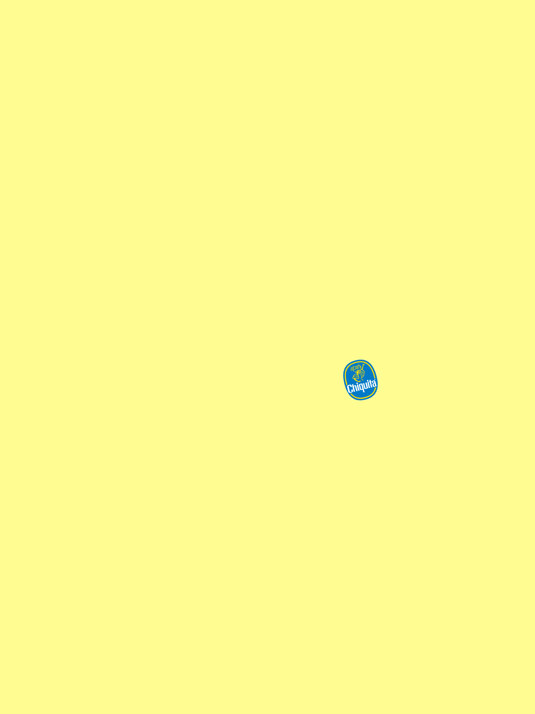

On April 8th, services for Church of the City New York were moved online indefinitely due to Covid-19. In the ensuing days, it felt like everything in New York ground to a gradual halt.
Our church had been in the midst of a reflective and hard-hitting series about sin, but this topic began to feel strange for a moment where everyone was entering a sort of anxious isolation. For a moment like this, our head pastor Jon felt a need to shift to something more nurturing and pastoral. I was asked to help theme this new series, which was based on the Fruit of the Spirit listed in Galatians 5:22–23.
In context of the church's preaching calendar at this point, there could have been no farther disparate topic. Whereas Sin was meant to be a series of deep self-examination, fruit of the Spirit was meant to be bright and verdant, reflecting the gifts and sustaining promises that God has for Christians. Since it ran through Holy Week, any visual system would also need to have flexibility for Good Friday and Easter.
Inspiration for this design came from a poster I'd seen in my college days. During a Relational Design assignment around "spectacle," one group of students had shot a short film based around the experience of eating a banana. To advertise it, they bought blank sheets of vivid, yellow paper and posted them around campus, with only a small Chiquita sticker to hint at its topic.
I always found this brilliant. In an art school environment full of skillfully made, attention-grabbing posters it communicated simply and efficiently without losing the playful nature of its contents.

Fruit stickers themselves are full of character and—despite their lack of uniformity—have a playfulness and scale that makes them easily identifiable. If the series was about the Fruit of the Spirit, what would the labels for these fruit look like?
Pretty quickly, I settled on a visual system that used small illustrated "fruit stickers" as central visual in each composition. I reached out to some talented illustrators from the church community and commissioned a weekly sticker, each themed around a related verse. Each ilustration would include lettering for the fruit of the week, references to related Scipture, and any illustration. Prompting and feedback was as loose as possible to maintain a diversity of visual elements and styles.
Creating a neutral backdrop and type system turned out to be quite challenge. I needed something that wouldn't draw too much attention away from ther sticker, but still successfully communicated the theme. I experimented with a number of different type treatments and background styles inspired by fruiit and food labeling, but quickly found that anyuthing too literal or graphic ended up pretty distracting. Blank color fields in a digital environment also proved dimensionless in a digital context, and there were only so many free macro fruit pictures I could find online…
In the end, I settled on an weekly abstract texture that would work well will almost any color combination. To maintain the theme, each texture was created by cropping and heaviily filtering photos of various fruit. Layouts feautured knockout Helvetica along a central vertical axis, while the pink and gray combination suggested a sort of otherworldly "spiritual flesh."
Lockdown in New York meant a lot of time indoors, surrounded by the same flickering screens and neutral walls. By playing with a pink-gray combination, I had hoped to subtly reference the simultaneous contrast of colors (a phenomenon that happens when two adjacent colors influence each other, changing our perception of these colors) as explored by color experts like Joseph Albers. Conceptually, the combined message might be about finding color amidst a collective grey moment in society. Unfortunately, I hadn't tested the latter color trick on someone who wasn't sightly red-green colorblind like me, so while this color combination is enough to convince me the grey is a teal or muted green, no one else I asked noticed the reference.
The final stickers feature illustrations from friends Jenice Kim, Margaret Lin, Judd Smith, and Dan Cho.
Each was interspersed in sermon presentations, social media assets, and a custom-coded webpage for each
week's discussion guide.
As part of my role on this project I designed the base template for the discussion guide website, a
presentation template for speakers, and art directed each week's stickers. On a weekly basis, I'd brief and
refine sticker designs, design and composite the weekly background texture, and generate any necessary
assets for worship, website, or social media.
One of the clearest representations of the final visual system was the cover slide which introduces each
sermon's topic and attribute. To emphasize each week's sticker as the composition's visual focus I played
with scale and placement of each sticker from week to week, while adhering to a more rigid layout.
｢ The Spirit in a Time
of the Flesh ｣
Worship is represented here as a moment of clear connection between God and Man (and a Michaelangelo reference), while idolatry warps this central relationship in distraction and occlusion
｢ Love in a Time of Selfishness ｣
Worship is represented here as a moment of clear connection between God and Man (and a Michaelangelo reference), while idolatry warps this central relationship in distraction and occlusion
｢ Joy in a Time of Despair ｣
Worship is represented here as a moment of clear connection between God and Man (and a Michaelangelo reference), while idolatry warps this central relationship in distraction and occlusion
｢ Transcendent Peace in a Time of Anxiety ｣
Worship is represented here as a moment of clear connection between God and Man (and a Michaelangelo reference), while idolatry warps this central relationship in distraction and occlusion

｢ Patient Endurance in a Time of Stress ｣
Worship is represented here as a moment of clear connection between God and Man (and a Michaelangelo reference), while idolatry warps this central relationship in distraction and occlusion
｢ Kindness in a Time of Harshness ｣
Worship is represented here as a moment of clear connection between God and Man (and a Michaelangelo reference), while idolatry warps this central relationship in distraction and occlusion
｢ Restorative Goodness in a Time of Brokenness ｣
Worship is represented here as a moment of clear connection between God and Man (and a Michaelangelo reference), while idolatry warps this central relationship in distraction and occlusion
｢ Faithfulness in a Time of Compromise ｣
Worship is represented here as a moment of clear connection between God and Man (and a Michaelangelo reference), while idolatry warps this central relationship in distraction and occlusion
｢ Gentleness in a Time of Roughness ｣
Worship is represented here as a moment of clear connection between God and Man (and a Michaelangelo reference), while idolatry warps this central relationship in distraction and occlusion
｢ Self Control in a Time of Self-fulfillment ｣
Worship is represented here as a moment of clear connection between God and Man (and a Michaelangelo reference), while idolatry warps this central relationship in distraction and occlusion
One additional consideration for this series is that it took us through Palm Sunday, Good Friday, and Easter—the traditional "Holy Week" of most Church calendars.
☞ For Palm Sunday I layered a palm leaf into the week's background texture
☞ For Good Friday I made a custom dark version of the sermon template, and a sticker-less cover slide with pomegranate textures.
☞ For Easter Sunday the same pomegranate now come alive in bright, festive colors while an abundance of stickers explode across the week's presentations. This was accompanied by social media assets advertising service times, and a custom Easter.nyc website which linked the liverstream.

I'd actually first heard about this sermon series almost three years prior, when Pastor Jon had mentioned it in passing during one of our meetings. I had the idea almost immediately, and was entranced with the idea of making physical stickers—imagine if instead of some paper bulletin, the greeters met you with a basket of branded [seasonal] fruit!
So when push came to shove and the idea was forced into a virtual world, I was quite honestly a little worried that the stickers might not survive their digital transformation. Would scale and an abstracted texture communicate enough to the make the idea recognizable? Happily, the stickers were understood fast enough that the creative team was inundated by requests for physical stickers.
Writing from several months removed, this felt like an incredibly necessary series. The project was conceptualized in the gray uncertainty of winter 2020 and took our church community through an unrecognizable spring. The vaccine was still months away, with uncertainty in nearly every sphere of influence from politics to industry to religion. As trees blossomed and bloomed in empty parks, our church community had splintered across boroughs and states, drawn together only by YouTube streams and Zoom calls. Newspapers wrote of isolation and disconnected communities just weeks before protests of racial injustice shook city streets.
What better time to focus on the fruit of the Holy Spirit? The Spirit is characterized sometimes as a fountain of living water, other times as an indwelling force of life. Its fruit thus offer to believers a promise of internal growth and self-sufficiency, independent of external circumstance. The series proved a pastoral reminder of this bountiful source, each week a small hint of its flowering.
Of course, it's a little disingenuous to say that this was conceptually captured in a failed color theory experiment and a small illustrations. A true understanding of the spirit is a life-long pursuit, while healing for a year like 2020 can only proceed from communion, community, and time. Yet as we braced for an anxious spring, it felt only appropriate to find freshness and inspiration from a still, small voice.